Fruits to Look For In A Farmer's Market
Welcome to the farmer Market, we sell fresh regional fruits, vegetables, and baked goods. We have many gathering where people enjoy the life outdoors
bringing the family to their full enjoyment.
Most of us think of spring as the time when things start growing, but a visit to any springtime farmers’ market will reveal
the fact that some plants have been waiting all winter to get edible. Early spring is a very exciting time to hit the farmers’
market. Not only have we made it through the winter and back into fresh fruit and veggies, but also we are getting access to
some special produce that often only occurs at this time, when the weather is moving from cold to warm.
Before strapping on the shoes, or with any luck just slipping on the flip-flops, get the lowdown on what’s best and fresh in early
spring. Some of these fruits and veggies won’t be available again until — at best — fall or possibly even until next spring rolls
around. In other words, start getting them while the getting is good.
- Apples
- Golden Delicious......$1.25 per lb
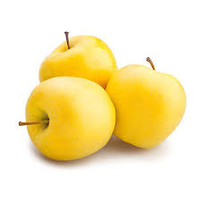
- Granny Smith......$1.51 per lb
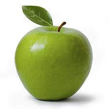
- Gala.....$1.16 per lb
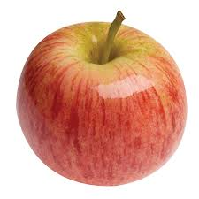
- Oranges
- Clementine......$0.94 per lb
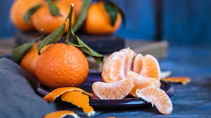
- Tangerine......$1.48 per lb
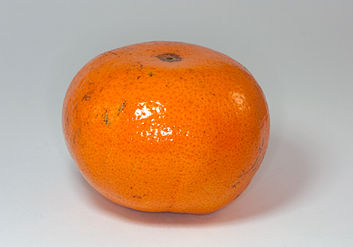
- Mandarin......$0.55 per lb
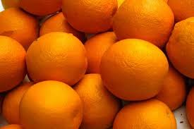
- Naval......$0.88 ea
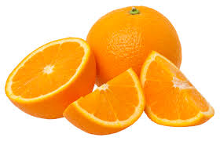
- Pineapples......$2.48 ea
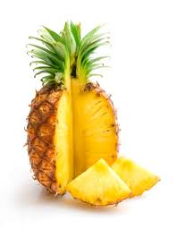
- Mangoes......$1 ea
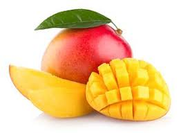
- Dragonfruit
- Pitaya Blanca......$2.50 ea
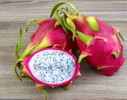
- Pitaya Roja......$2.50 ea
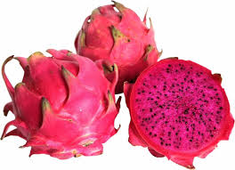
- Pitaya Amarilla......$2.50 ea
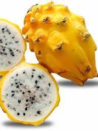
- Hass Avocadoes......$3.00
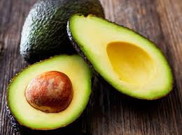
- Papaya
- Mexican Red/Yellow......$4 ea
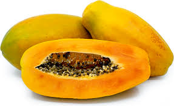
- Hawaiian Sunrise......$5 ea
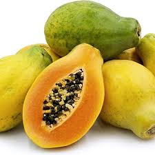
- Pear
- Comice......$2.00 per lb
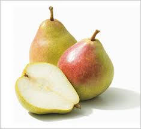
- Bosc......$1.50 per lb
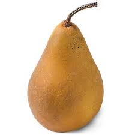
- Williams......$8.00 per 3 lb bag
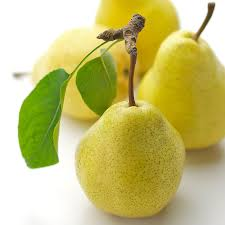
- Red Anjou......$1.00 per lb
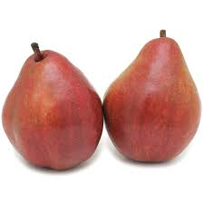
- Green Anjou......$2.00 ea

- Concorde......$1.78 per lb
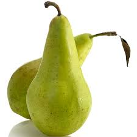
- Cherries......$5.05 per lb
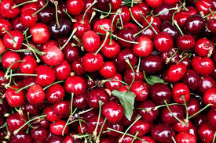
- Grapes
- Thomson seedless(Green)......$3.00 ea
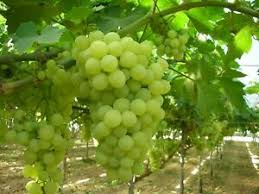
- Flame seedless(Red)......$3.00 ea
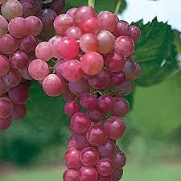
- Berries
- Strawberries......$2.40 per lb

- Blueberries......$1.93 per lb
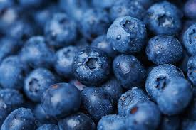
- Raspberries......$6.46 per lb
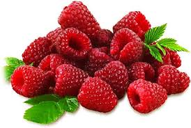
- Blackberries......$3.50 ea
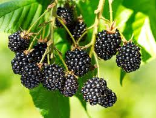